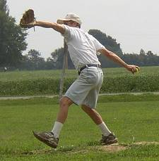
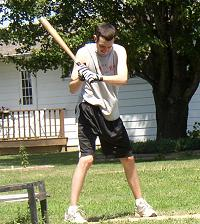
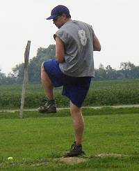
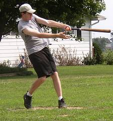
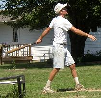
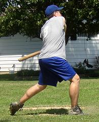
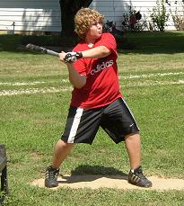
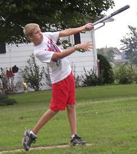
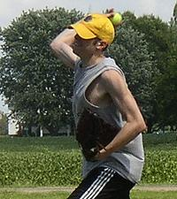

Tony Cork picked up the win on Saturday in the first game of the doubleheader allowing 6 runs in 7 innings. |

Patrick Cork finished the day 11-for-24 with 5 homeruns and 12 RBI, including 4 consecutive homers in the first game. |

Dave Rueth suffered the loss in the opener on Saturday. Rueth cruised through 3 innings before giving up 8 runs in the fourth. |

Chris Cork went 9-for-24 with 2 triples and 2 homeruns in the doubleheader. |

Tony Cork drives a ball to left in the opener. Cork was 8-for-24 with a double and a triple. |

Dave Rueth belted 4 homeruns in the first game on Saturday - all solo shots - and finished the doubleheader 7-for-23. |

Evan Woodard blasts a homer to left in the second game of the doubleheader. The homerun was the first of Woodard's career as he finished the day 4-for-17. |

Luke Yochum cranked out the first homerun of his career in game two on Saturday for his team's first runs. Yochum, making his chair baseball debut, finished the afternoon 4-for-17. |

Patrick Cork saved the first game of the doubleheader and won the second game. In total, Cork allowed just one earned run and 8 hits in 9 innings of work, while striking out 9. |